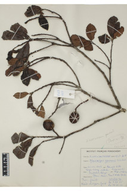
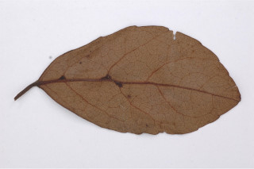
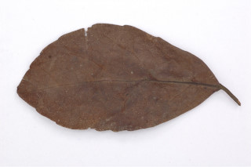
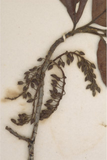

Images :





| Habit : | Trees up to 20 m tall. |
| Leaves : | Leaves simple , alternate , spiral , clustered at twig ends; stipules caducous ; petiole 0.6-1.5 cm long, sparsely adpressed hairs or glabrous , canaliculate ; lamina 4-8 x 2.5-4 cm, mostly obovate , apex acute with blunt tip or obtuse , base cuneate , margin serrate , glabrous , chartaceous ; midrib slightly raised above; secondary_nerves 4-6 pairs, slender, branched with domatia in the axils beneath; tertiary_nerves reticulate . |
| Inflorescence / Flower : | Inflorescence axillary racemes , pubescent , 13-25 flowered; flowers white; anthers bearded at apex . |
| Fruit and Seed : | Drupe , broadly ellipsoid , 2.5 cm long, 1-seeded . |